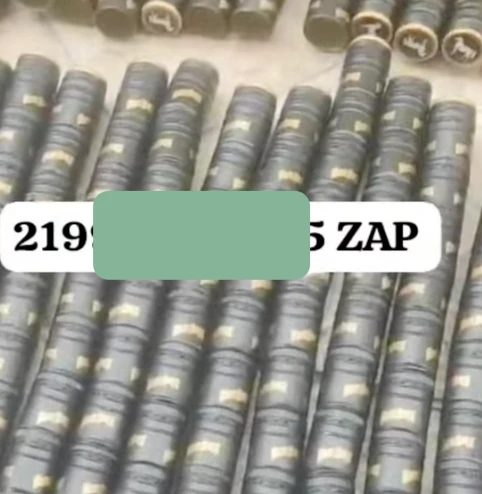
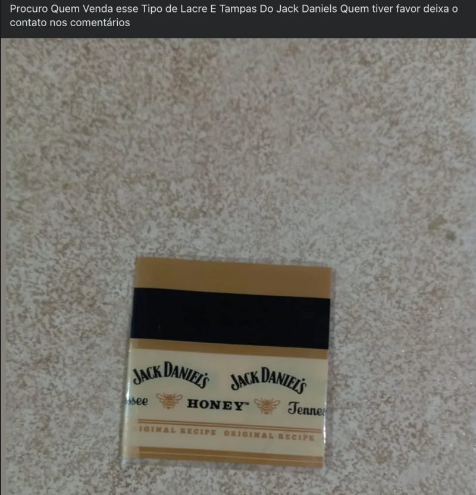

Labels and caps from famous beverages, seals presented as if they were from Brazil's Federal Revenue Authority, and bottles of gin, vodka, and whisky brands circulate freely in Facebook groups, both open and closed, dedicated to buying and selling these items, according to an investigation by BBC News Brasil.
The advertisements promise delivery to "all of Brazil" and sales on a large scale, with thousands of products. Among those interested are profiles with the names and logos of liquor stores from different states across the country. In just one of these groups there are more than 10,000 participants, in addition to other smaller groups with restricted access.
A seller with a Rio de Janeiro area code, for example, offers bottles of an international brand of whisky for R$ 5 to R$ 10 per unit, depending on the quantity purchased. The value is practically ten times what one could get from a recycling company, for example.
In a WhatsApp conversation with BBC, a seal vendor says the product sells for R$ 1.30 per seal, and offered a package with 1,000 units. He did not confirm the origin of the material and did not want to provide further details.
In recent days, Brazilian authorities have warned about an atypical number of cases of people poisoned by methanol due to consumption of alcoholic beverages contaminated with the substance — which can cause deaths and irreversible damage, such as blindness.
According to the Health Ministry's assessment from Saturday, October 4th, there are 14 confirmed cases of methanol ingestion, including two deaths, and another 181 cases under investigation.
There is suspicion that beverages may have been adulterated with methanol, since many of the reported cases are from people who drank in bars. Authorities are also working with the hypothesis of some contamination problem in the bottling of bottles.
In one of the groups seen by BBC, a profile of a liquor store in the interior of Mato Grosso do Sul says it is looking for seals and caps from a famous whisky brand — and in the same post, other buyers appear interested.

Screenshots show advertisements for alcohol bottle caps on Facebook groups
Bottles described as "zero" are also advertised, as well as boxes, caps, and stickers. Vendors even publish videos to demonstrate the supposed quality of the products and offer shipping through the postal service.
In practice, these groups function as a virtual street market: vendors and buyers display their WhatsApp numbers, with area codes from various states.
In some cases, there is moderation and permission is required to enter. In others, access is completely open.
The sale of bottles, in itself, is not a crime, but various experts warn that it is a common practice in the parallel market for the falsification of alcoholic beverages.
Vendors contacted by the report say they do not know what the destination of the bottles is. Among advertisers there are also recycling companies and even people who present themselves as collectors.
BBC News Brasil approached Meta, responsible for Facebook, but there has been no positioning on the case yet.
On Sunday, October 5th, the Federal Attorney General's Office (AGU) cited this BBC report and ordered Meta to remove content and groups that promote illegal sales.

Liquor store profile advertises purchase of whisky seals on Facebook
"whoever sells knows the goal is smuggling"
A report by the Brazilian Public Security Forum (FBSP) pointed out that the illegal market for alcoholic beverages moved R$ 56.9 billion in Brazil, an increase of 224% compared to 2017.
The modus operandi of falsification involves the reuse of bottles from legitimate brands, according to the entity. According to the Forum, it is common in falsification to practice refill, with the reuse of containers for bottling adulterated beverages. In 2023 alone, 1.3 million beverage bottles were seized.
A recent action by the Civil Police in Mogi das Cruzes, in the metropolitan region of São Paulo, found a warehouse where at least 20,000 bottles were being cleaned.

Police operations have seized millions of fake bottles
For Lucien Belmonte, executive president of the Brazilian Glass Industry Association (Abividro), the lack of inspection makes crime profitable in this sector.
He says that the correct procedure would be for establishments that sell alcoholic beverages to send bottles to recycling containers or hire a collection service.
He highlighted a bill of law, placed on an urgent regime by the House of Deputies, that classifies the adulteration of food, including beverages, as a heinous crime and evaluates that this commerce of bottles with the purpose of falsification should also be punished.
"Today there is no specific crime. It is necessary to have a broad interpretation of the law to typify it."

Federal seals are supposed to authenticate imported distilled beverages
How are distilled beverages controlled?
The control of imported distillates, such as gin or vodka, is done through the use of seals, which are printed by the Mint and applied to the caps of bottles. The authentic seal has a hologram that shows the letters R, F, or B.
According to the Federal Revenue Authority, the seal is related to tax aspects, without specific concern with the contents of the bottles or product composition.
The authorization for the entry into the country of imported beverages is the responsibility of the Ministry of Agriculture and Livestock (MAPA), which is responsible for verifying and authorizing the import of these products in advance and evaluating their identity, quality, and safety.
Entities complain about the suspension of a beverage tracking system, the Sicobe, which had been implemented in 2008, but was deactivated in 2016 under the claim of high maintenance costs (around R$ 1.4 billion per year). There was a determination from the Federal Audit Court (TCU) last year to reconnect it, but the case was litigated and is pending a decision from the Supreme Federal Court.
A 2023 study signed by two economists from Fia Consultoria explains how Sicobe worked: sensors installed in the production line recorded the number of beverages bottled in cans or in bottles. The data was then sent to the Federal Revenue Authority, without depending on voluntary notifications from beverage producers.
"The system reduces fraud and prevents underreporting of production," the study says.
This system, however, monitored beer and soft drinks, not distillates, according to a note released by the Federal Revenue Authority.
Still, experts evaluate that some type of tracking needs to occur to prevent falsification, even if through another system.
Silva evaluates that there needs to be some kind of product traceability and that seals alone do not address the problem.
"Today you can easily find counterfeit seals to buy. The same printing company that counterfeits the label also counterfeits the seal."
For retired Federal Police delegate and compliance and security consultant Jorge Pontes, there is a lack of control over beverage production in Brazil.
"Before, the control was much better. There has to be some kind of government control. You can't leave it only in the hands of private parties, because it creates an environment conducive to crime."
"Today the so-called 'follow the product' is just as important as 'follow the money' in investigations. The government needs to know what is being produced, how much is being produced."

Experts warn that current control mechanisms are insufficient
Senior researcher at the Brazilian Public Security Forum (FBSP) Nívio Nascimento, who participated in an entity study that cites the smuggling of alcoholic beverages, emphasizes that this type of crime has always existed, but the new phenomenon observed in recent years is the insertion and increasing interest of organized crime.
"Often we associate factions with the trade of cocaine, marijuana, and other illicit goods. But today the scenario is to diversify operations. There has been a robust infiltration of organized crime in various sectors of the economy, such as the beverage industry."
It is worth noting that there is still no evidence that the contamination cases in São Paulo are linked to factions.
"At this moment there is little information available to conclude if there is PCC participation. It is necessary to wait for investigations to understand what happened."